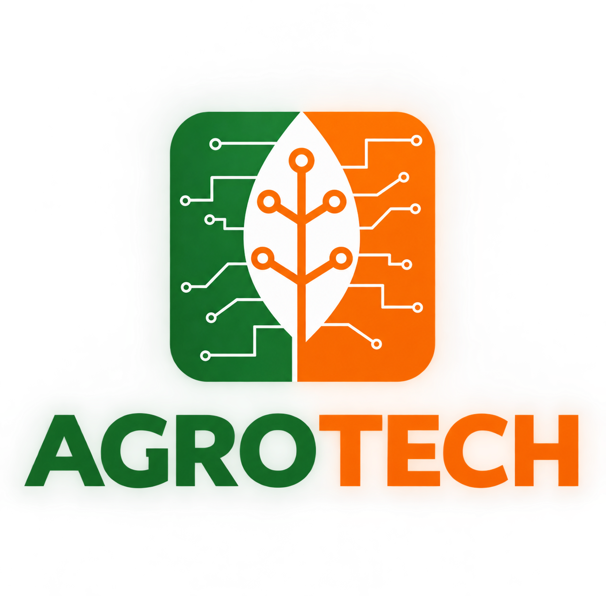

Bienvenidos a AgroTech
El mundo tecnológico de tu granja
Galería Tecnológica


¿Por qué preferir AgroTech?
Nosotros buscamos la comodidad de nuestros clientes, satisfaciendo todas las necesidades tecnológicas y optimizando cada labor que antes demandaba agotadoras jornadas manuales.
Descubre más sobre maquinaria en el sector agropecuario →
Catálogo de Maquinarias
¿Por qué modernizar tu método de trabajo?
| Factor | Método Tradicional (Manual) | Tecnología AgroTech |
|---|---|---|
| Tiempo de fumigación | 2 a 3 días por hectárea | 15 a 20 minutos con dron autónomo |
| Desperdicio de insumos | Hasta 35% por aplicación irregular | Ahorro del 30% con microaspersión guiada |
| Monitoreo de plagas | Inspección a pie con demoras | Mapeo satelital y multiespectral inmediato |
| Riesgo para el trabajador | Exposición directa a agroquímicos | Operación remota a distancia segura |
Nuestros Servicios
🚜 Ventas
Drones, tractores, cosechadoras, sembradoras y robots de última generación listos para tu campo.
⏳ Alquiler
Alquila maquinaria especializada por días, semanas o meses con tarifas ajustadas y soporte técnico.
🔄 Compra y Retoma
Compramos tu equipo usado para que des el salto y renueves toda tu flota tecnológica.
Preguntas Frecuentes
¿Tienen servicio de alquiler de maquinaria?
Sí, ofrecemos alquiler por días, semanas o meses con operario calificado incluido si lo necesitas.
¿Los drones incluyen garantía?
Todos nuestros equipos cuentan con 1 año de garantía directa de fábrica y repuestos originales.